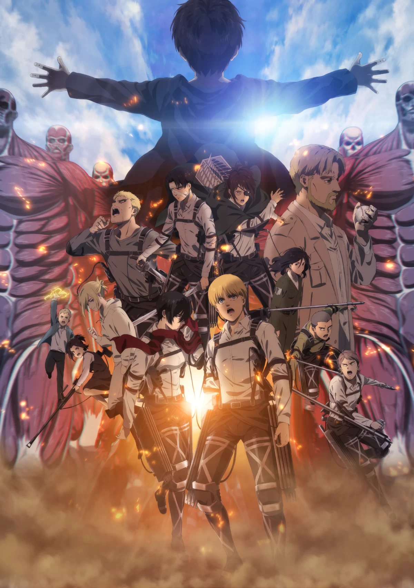

Name:- Attack on Titan
Ratting:- ★★★★★
Attack on Titan is set in a dark, post-apocalyptic world where the remnants of humanity live within three massive, concentric walls—Maria, Rose, and Sheena—to protect themselves from Titans, giant humanoid creatures that devour humans without reason. The story follows Eren Yeager, his adoptive sister Mikasa Ackerman, and their childhood friend Armin Arlert. Their peaceful life is shattered when the Colossal Titan and the Armored Titan breach the outermost wall, leading to a horrific massacre and the death of Eren’s mother. Driven by pure rage and a desire for vengeance, Eren vows to exterminate every single Titan and joins the military's elite Survey Corps to fight for humanity’s freedom.
As the trio enters the military, the story takes a shocking turn when Eren discovers he has the mysterious ability to transform into a Titan himself. This revelation shifts the focus from simple survival to a complex political and biological mystery. The Survey Corps, led by Commander Erwin Smith and Captain Levi, begin to uncover deep-seated conspiracies within their own government and the true nature of the Titans. They learn that the walls themselves are filled with Titans and that some of their own comrades are actually "Titan Shifters" sent from an unknown location to destroy them. The struggle for the walls culminates in an emotional return to Eren's hometown, where they discover his father's basement and the truth about the world beyond the ocean.
The second half of the series reveals that the people within the walls are Eldians, a race capable of becoming Titans, who have been exiled to "Paradis Island" by the global superpower, Marley. The conflict evolves from a battle against monsters into a brutal cycle of war, racism, and historical hatred between nations. Eren, now disillusioned and hardened by the truth, begins to see that true freedom can only be achieved by destroying the enemies across the sea. He eventually gains the power of the Founding Titan and initiates "The Rumbling," a catastrophic event where thousands of Colossal Titans march across the globe to flatten everything in their path, believing it is the only way to protect his people.
In the final arc, Eren's former friends and allies are forced to team up with their Marleyan enemies to stop his genocidal path. This leads to a heartbreaking final confrontation that explores themes of sacrifice, the burden of history, and the price of freedom. Ultimately, Mikasa is forced to make the ultimate choice to end the conflict and the Titan curse forever. The story concludes with a bittersweet look at the future, showing that while the era of Titans has ended, the human struggle for peace and understanding continues. Attack on Titan stands as a profound masterpiece that examines the dark side of humanity and the indomitable will to fight against a cruel world.

Name:- One piece
Ratting:- ★★★★★
One Piece tells the grand story of Monkey D. Luffy, a young man inspired by his childhood idol, "Red-Haired" Shanks, to become a pirate and find the legendary treasure known as the "One Piece." After accidentally eating a Gomu Gomu no Mi Devil Fruit, Luffy gains the ability to stretch his body like rubber but loses the ability to swim. He sets out into the East Blue to gather a crew, the Straw Hat Pirates, including the swordsman Roronoa Zoro, the navigator Nami, the sniper Usopp, and the chef Sanji. Together, they acquire their first ship, the Going Merry, and head toward the Grand Line—a treacherous sea where the world's most powerful pirates and the World Government clash in a search for the legacy of the late Pirate King, Gol D. Roger.
As the crew travels across the Grand Line, they face increasingly dangerous foes and recruit more unique members, such as the doctor Tony Tony Chopper, the archaeologist Nico Robin, the shipwright Franky, and the musician Brook. Their journey takes them from the desert kingdom of Alabasta to the islands in the sky, Skypiea, and into the heart of the World Government's judicial stronghold, Enies Lobby. The story shifts significantly during the Summit War at Marineford, where Luffy witnesses the death of his brother, Portgas D. Ace. Realizing they are not yet strong enough for the "New World" (the second half of the Grand Line), the crew undergoes a two-year training period, vowing to reunite and become stronger for the sake of their captain's dream.
The second half of the journey sees the Straw Hats entering the New World, where they form alliances to take down the Four Emperors (Yonko) who rule the sea. This saga involves liberating the underwater Fish-Man Island, surviving the hazards of Punk Hazard, and dismantling the criminal empire of Donquixote Doflamingo in Dressrosa. The stakes reach an all-time high when the crew infiltrates the territory of Big Mom and eventually reaches the land of Wano to face the strongest creature alive, Kaido. During this battle, Luffy awakens his Devil Fruit to its true form, Gear 5, revealing its connection to the legendary Sun God Nika and the "Joy Boy" figure of the past, marking a turning point that shakes the foundations of the entire world.
The overarching narrative of One Piece is more than just a search for treasure; it is a deep exploration of history, freedom, and the "Void Century"—a 100-year gap in history that the World Government desperately tries to hide. As Luffy and his crew edge closer to the final island, Laugh Tale, the true nature of the world, the meaning of the "Will of D," and the ultimate fate of the celestial dragons come into focus. With the help of his helmsman Jinbe and his vast Grand Fleet, Luffy continues to fight for a world where everyone can eat their fill and live freely, leading toward a final, massive war that will determine the fate of the entire planet and finally reveal what the One Piece truly is.

Name:- Naruto
Ratting:- ★★★★★
The story of Naruto follows the life of Naruto Uzumaki, an orphaned boy living in the Hidden Leaf Village. Since birth, he has carried the burden of the Nine-Tailed Fox, a powerful and destructive demon sealed inside his body by the Fourth Hokage. Because of this, the villagers feared and shunned him, leaving Naruto to grow up in isolation. To get attention and prove his worth, Naruto dedicated his life to a single goal: becoming the Hokage, the village leader, so that everyone would finally respect him. Under the guidance of his teacher Kakashi Hatake, Naruto joins Team 7 alongside his rival Sasuke Uchiha and Sakura Haruno, beginning his journey as a ninja through dangerous missions and the intense Chunin Exams.
As the plot progresses, a dark shadow falls over the group when Sasuke, driven by a thirst for revenge against his brother Itachi, decides to leave the village to seek power from the villainous Orochimaru. Naruto vows to bring his friend back, leading to an epic clash between the two at the Valley of the End. Although Naruto fails to stop Sasuke from leaving, he refuses to give up. He leaves the village for several years to undergo rigorous training with the legendary Sannin, Jiraiya, learning to control the massive chakra of the Nine-Tails and developing his own powerful techniques like the Rasengan, preparing for the inevitable return of his friend and the rising threat of the Akatsuki.
The second half of the story, known as Shippuden, escalates into a global conflict as the criminal organization Akatsuki begins capturing the Tailed Beasts to achieve world domination. Naruto faces incredible losses, including the death of his mentor Jiraiya, which pushes him to master Sage Mode and eventually defeat the Akatsuki's leader, Pain. This victory finally earns him the recognition he sought since childhood. However, the conflict expands into the Fourth Great Ninja War, where Naruto discovers the secret history of the ninja world and the true mastermind, Madara Uchiha. By befriending the Nine-Tails (Kurama), Naruto reaches his full potential, uniting all the ninja villages against a common enemy.
In the climactic finale, Naruto and a redeemed Sasuke team up to defeat the ancient goddess Kaguya Otsutsuki, saving the world from eternal sleep. Despite the victory, the two rivals have one last brutal battle to decide the future of the shinobi world. They eventually find peace, and Sasuke returns to the side of good. The series concludes with Naruto finally achieving his dream of becoming the Seventh Hokage. He transforms from a lonely, hated child into a hero who brought world peace, eventually starting a family of his own and passing his legacy down to his son, Boruto.